By Andrew Dickson
3rd February 2021
Gordon Parks documented deep,
wounding issues that have long been a
part of the US story. Andrew Dickson
explores the work of a man who compared
his camera to a weapon, yet shot his
photos with the eye of a poet.
ere it not for the officer’s old fashioned
uniform, you could
be forgiven for thinking that
the picture was taken at one of
the protests that tore through
the US after the death of George Floyd last
summer. All it needs is a couple of face masks
and we could be in the centre of New York or
Minneapolis in the turbulent and agitated days
of mid-2020.
In fact this image, captured by the
photographer Gordon Parks, is nearly 60
years old. Entitled simply Harlem Rally, we
know little more than that it was taken in this
predominantly black New York neighbourhood
some time in 1963, during one of the protests
about civil rights that roiled the US that year,
too.
In June 1963, George Wallace, the notorious
segregationist governor of Alabama,
attempted to prevent black students
registering at the state university, a standoff
that resulted in the National Guard being
mobilised. In August, Martin Luther King gave
his rhapsodic “I Have a Dream” speech in front
of 250,000 people in Washington, DC. But the
message about African Americans “living in a
police state” still resonates now.
he photograph is one of more than 50
Parks images currently on show at Jack
Shainman Gallery in New York – in fact two
galleries, because the exhibition spans both
Shainman locations in Chelsea. Entitled Half
and the Whole – a title taken from an eloquent
accompanying essay by the critic Jelani Cobb
– it shows two contrasting sides to Parks, one
of the most significant black photographers of
his era.
On West 20th Street, there are photographs
drawn from his famous Harlem series Invisible
Man, a virtuosic reimagining of Ralph
Ellison’s 1952 novel, and another
series depicting life in Alabama under
Jim Crow a few years later. A few blocks
north on West 24th Street, portraits
of protest documenting the civil rights
movement through the 1950s and 60s are on
display. The thread that binds them is Parks’s
great subject: what it feels like to be both
American and black, and what Cobb describes
as the agonising “void” between those two
words.
ne of the earliest photographs to make
Parks’s name, American Gothic (1942),
is included in the show. Taken when he was working
for the FSA, it was inspired by Grant Wood’s much reproduced
painting of the same title, which depicts a
forbiddingly respectable white farmer and his daughter
standing in front of their forbiddingly respectable
white-painted Midwestern house.
If we detect echoes between past and present, we should hardly be surprised, suggests Leslie Parks, one of the photographer's daughters: her father trained his gaze on deep, wounding issues that have always been part of the US story.
"He was photographing what was around him," she reflects. "He wasn't looking to the future. But I have a feeling he did know how important his images would become."
For clues as to why, she suggests, you only need look at
Parks’s life story. Born in the small rural town of Fort
Scott, Kansas, he was the youngest of 15 children. The
family were dirt-poor, and schools were segregated;
once, when he was 11, a gang of white boys hurled
him into the local river, believing he couldn’t swim
(a scene he recreated when he revisited the town in
1963, capturing a boy’s hand reaching eerily out of the
water). Following his mother’s death when he was 14,
Parks migrated – like so many African Americans of his
generation – to the north. In the bustling city of St Paul,
Minnesota, Parks earned his first wage playing piano in
a brothel.
fter taking a job as a railroad
porter, he bought a camera
in a pawnshop in 1937,
inspired by photos by the great documentary
photographer Dorothea Lange. Despite
being entirely self-taught, within a few
years he was working alongside many of the
leading photojournalists of his era (including
Lange) in the Farm Security Administration’s
photography section, documenting America’s
landscape and its people through a time of
tumultuous change.
Commissions for Vogue, the blackfocused
magazine Ebony and Life
magazine followed; Parks soon became
the first African American photographer
to be taken on as staff at Life, one of
the biggest magazines of its day. In the
1970s, he turned his attention to movies,
directing the pioneering Blaxploitation
film Shaft. He also composed music and
wrote indefatigably, including poetry
and several memoirs. His last poetry
collection was published just months
before his death in 2006.
here was almost nothing her father couldn’t do if he
wanted, says Leslie Parks with a laugh: he had the
kind of energy that burned up the room. “There was always
this moving forward with him,” she says. “No giving up or
doubt.”
Parks gave this icon of rural Americana a sardonic racial
twist: his subject is a black cleaner, Ella Watson, shown
holding a mop and broom and standing soberly in front
of the Stars and Stripes (the composition was artfully
posed by Parks). The image seems timelier than ever in
the aftermath of the attack on the US Capitol in the dying
days of Donald Trump’s reign – where black cleaning staff
were left to clear up afterwards.
“If that doesn’t hit you,
especially in the last couple of weeks,” says Leslie Parks,
“then I don’t know what you’re looking at.”
Again and again in these images, Parks shows a
fascination with hands – a preacher’s lifted in benediction,
hands in a crowd lifted in acclamation or joy, reaching
for togetherness. Togetherness is arguably the theme of
these civil rights photos, which are less outraged and more
optimistic than we might expect. United we stand, they
seem to say. Together we can achieve anything.

n another image there are two black boys, one
brandishing what could be a real pistol and pretending
to fire it, but alongside them is a white boy, a mop of
blond hair grinning for the camera – apparently a friend.
We see Willie Causey and his wife on their front porch, a
well-tended garden behind them, the sea-green of Mrs
Causey’s spotless apron matching precisely the colour of
his rocking chair.
Parks’s career was not without struggle itself. Despite his
remarkable success, he chafed at the restrictions of the
magazine picture-story format and the meddling of white
editors. Having produced a thoughtful and surprisingly
tender series on a black gang leader in Harlem in 1948,
Parks was appalled when his editors at Life rejected nearly
all the most intimate images in favour of sensational shots
of street fights, shootings and the like, brutally cropping
his frames for maximum scarifying impact (“Red Jackson’s
life is one of fear, frustration and violence,” read the
sub-headline). After kicking up a fuss, he was told his
assignment would no longer make the magazine cover.
Parks repeatedly compared his camera to a weapon. One
version of the line ran, “you have a 45mm automatic pistol
on your lap, and I have a 35mm camera on my lap, and
my weapon is just as powerful as yours”. The image goes
both ways: yes, he chose to pick up a camera instead of
a firearm, choosing to document the situation rather than
reach for violence, but cameras shoot too. Elsewhere, Parks
expressed the thought differently: “I picked up a camera
because it was my choice of weapon against what I hated
most about the universe – racism, intolerance, poverty.”
et the pictures that truly resonate, perhaps, are the
gentler ones, where he stepped away
from outright activism and allowed his
poet’s eye to roam. Commissioned by Life
to produce a series about racial tensions in
the South in the aftermath of the 1955 “bus
boycott” in Montgomery, Alabama – during
which African Americans refused to travel on
city buses in protest at segregated seating –
he emerged with something quite different.
There are hard existences here, undeniably,
and you sense Parks’s slow-burning anger at
the federal government’s policy of “separatebut-
equal” rights for blacks and whites – a
fraud everyone knew to be a fraud. Yet he also
captures the ambiguity and complications of
reality, genuine people rather than caricatures
or headlines.
n segregated black communities in the
South there is quietness and normality
alongside inequality: boys going fishing, girls
playing in the water, women gossiping over
the garden fence, families going to church.
People just living their lives.
Also beauty, as Leslie Parks notes. For all
the ugliness of the political system Parks set
out to depict, her father found a great deal of
loveliness in this place too. “You just see a lot
of beauty in these pictures,” she says quietly.
“Always beauty.”